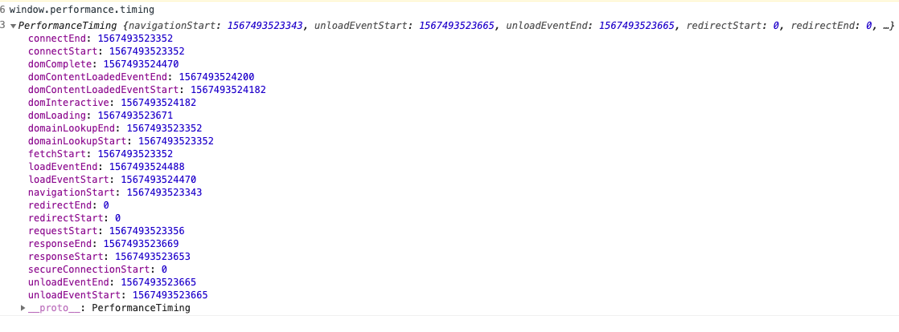

监控
初始化页面->重定向时间, 清除前一个页面 -> 缓存->DNS 解析->TCP 三次握手 四次挥手->向服务器发送请求->服务器响应返回请求->处理文件->加载 的整个流程图

衡量性能的指标

- 上个页面的到这个页面的时长 fetchStartfet-navigationStart
- 重定向时常 ： redirectEnd-redirectStart
- DNS 查询耗时 ：domainLookupEnd - domainLookupStart
- TCP 链接耗时 ：connectEnd - connectStart
- request 请求耗时 ：responseEnd - responseStart
- 解析 dom 树耗时 ： domComplete - domInteractive
- 白屏时间 ：responseStart - navigationStart
- domready 时间(用户可操作时间节点) ：domContentLoadedEventEnd - navigationStart
- onload 时间(总下载时间) ：loadEventEnd - navigationStart
静态资源监控
performance.getEntriesByType('resource')
performance.js;
//修改新数据
let processData = _ => {
let newdata = {
name: _.name,
initiatorType: _.initiatorType,
duration: _.duration
};
return newdata;
};
export default {
init(cb) {
// 获取资源相关的信息 可以收到一个发送一个
if (window.PerformanceObserver) {
// MutationObserver。ie9 不兼容
let observer = new PerformanceObserver(list => {
let data = list.getEntries(); //data是一个数组类型
cb(processData(data[0]));
});
observer.observe({entryTypes: ['resource']});
} else {
window.onload = function () {
let resourceData = performance.getEntriesByType('resource');
let data = resourceData.map(_ => processData(_));
cb(data);
};
}
}
};
index.js;
let fotmatObj = data => {
let arr = [];
for (let key in data) {
arr.push(`${key}=${data[key]}`);
}
return arr.join('&'); //{a:1,b:2} =>a=1&b=2
};
performance.init(data => {
// 获取到页面性能相关的数据
// 图片可能没大小 空的图片
new Image().src = '/p.gif?' + fotmatObj(data);
console.log(data);
});
ajax 请求监控
fetch
window.fetch = function () {
const debugFetchInfo = debugFetch.apply(window, arguments);
debugFetchInfo.then(res => {
console.log(res.status);
if (res.status > 399) {
let data = transformFetch(res, arguments);
debugRequest.handelUpload(debugConst.apiUrl.error, data);
}
});
return debugFetchInfo;
};
ajax
通过代理获取请求错误信息上报 ajax-hook
前端异常监控
window.onerror
error 事件的事件处理程序。针对各种目标的不同类型的错误触发了 Error 事件
- 语法：window.onerror=(message, source, lineno, colno, error){}
- 参数：
- message：错误信息（字符串）。可用于 HTML onerror=""处理程序中的 event。
- source：发生错误的脚本 URL（字符串）
- lineno：发生错误的行号（数字）
- colno：发生错误的列号（数字）
- error：Error 对象（对象）
- 返回值：若该函数返回 true，则阻止执行默认事件处理函数
!> promise 失败了不能通过 onerror .... 捕获 promise 错误
window.onerror = function (msg, url, lineNo, columnNo, error) {
// 处理错误信息
};
element.onerror
- 语法：element.onerror = function(event) { ... }
- 参数：
- event HTML onerror=""处理程序中的 event。
element.onerror 使用单一 Event 参数的函数作为其处理函数
!> 资源加载失败不能用冒泡得到错误,可以用捕获处理可以到的错误监听
export default {
init(callback) {
// window.addEventListener('error',fn,true)
window.addEventListener(
'error',
function (evt) {
//捕获文件加载错误
console.log('error', evt);
},
true
);
window.onerror = function (message, source, lineno, colno, error) {
//捕获行内js执行错误
console.dir(error);
let info = {
message: error.message,
name: error.name
};
let stack = error.stack;
let matchUrl = stack.match(/http:\/\/[^\n]*/)[0];
console.log(matchUrl);
info.filename = matchUrl.match(/http:\/\/(?:\S*)\.js/)[0];
console.log(info.filename);
let [, row, colume] = matchUrl.match(/:(\d+):(\d+)/);
info.row = row;
info.colume = colume; // 上线的时候代码会压缩 source-map 找到对应的真实的报错
callback(info);
};
}
};
primise
unhandledrejection 继承自 PromiseRejectionEvent，而 PromiseRejectionEvent 又继承自 Event。因此 unhandledrejection 含有 PromiseRejectionEvent 和 Event 的属性和方法。例子
window.addEventListener('unhandledrejection', handelEvent, true);
try ...catch
标记要尝试的语句块，并指定一个出现异常时抛出的响应
try 语句包含了由一个或者多个语句组成的 try 块, 和至少一个 catch 子句或者一个 finally 子句的其中一个，或者两个兼有， 下面是三种形式的 try 声明：
try...catch
try...finally
try...catch...finally
注意 ⚠️
- finally 子句在 try 块和 catch 块之后执行但是在下一个 try 声明之前执行。无论是否有异常抛出或捕获它总是执行。
- try..catch 之后错误就此止步，除非手动抛出错误
- finally 块中返回一个值，那么这个值将会成为整个 try-catch-finally 的返回值
try {
try {
throw new Error('oops');
} finally {
console.log('finally'); //finally
}
} catch (ex) {
console.error('outer-666', ex.message); //outer-666
}
try {
throw "myException"; // generates an exception
};
catch (e) {
// statements to handle any exceptions
console.log('123',e); // pass exception object to error handler
}
框架
vue 内部发生的错误会被 Vue 拦截，因此 vue 提供方法给我们处理 vue 组件内部发生的错误。
Vue.config.errorHandler = function (err, vm, info) {
React 16 引入了一个新的概念 —— 错误边界,可以捕获并打印发生在其子组件树任何位置的 JavaScript 错误，并且，它会渲染出备用 UI，
class ErrorBoundary extends React.Component {
constructor(props) {
super(props);
this.state = {hasError: false};
}
static getDerivedStateFromError(error) {
// 更新 state 使下一次渲染能够显示降级后的 UI
return {hasError: true};
}
componentDidCatch(error, errorInfo) {
// 你同样可以将错误日志上报给服务器
logErrorToMyService(error, errorInfo);
}
render() {
if (this.state.hasError) {
// 你可以自定义降级后的 UI 并渲染
return <h1>Something went wrong.</h1>;
}
return this.props.children;
}
}
<ErrorBoundary>
<MyWidget />
</ErrorBoundary>;
数据上报
new Image().src = 'http://www.xxxx.com';
navigator.sendBeacon('a.php'); //埋点